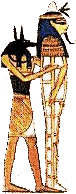

Svemir
Egipæani su vjerovali da svemir èine bogovi koji su personifikacije elemenata prirode. Geb je Zemlja, on leži dolje. Na njemu je Šu, zrak, koji razdvaja Geba od Nut, neba. Nutino tijelo je nebo, a njime se kreæu Sunce, Mjesec i zvijezde. Ocean Nun je oko Geba te predstavlja sva mora, a nalazi se i na nebu pa je nebo plavo. Veæina drugih bogova živi na nebu, dok Oziris s mrtvima živi u podzemlju - Duat. Rijeka Nil je sveta rijeka, a njezin bog je Hapy, personifikacija vode i obilja. Set je vladar pustinja koje okružuju dolinu Nila.

 Kralj podzemlja, Anubis
Petra Jakopoviæ © 2016.